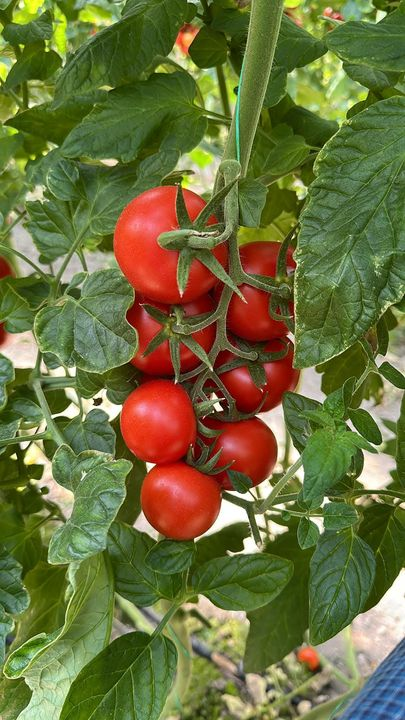
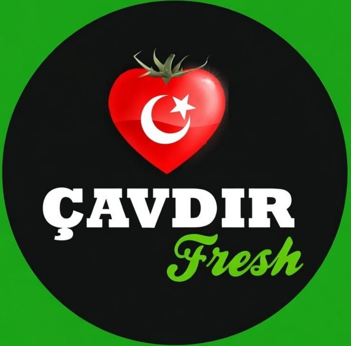
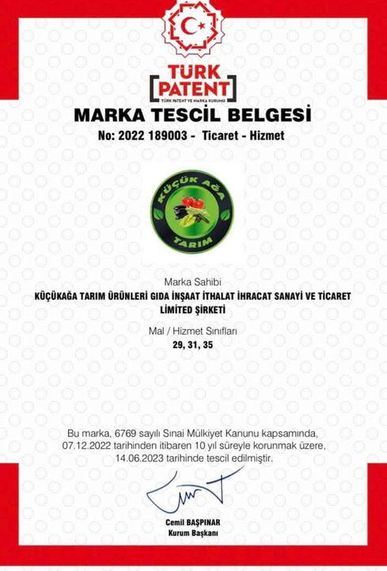

Sera
Sera
Salkım Domates
Salkımıyla birlikte, dalında tam olgunlaşarak hasat edilir. Yoğun aroması ve canlı rengiyle hem sofrada hem tezgâhta öne çıkar.
DetaylarKüçükağa Tarım; salkım, bif ve kokteyl domatesten biber ve patlıcana kadar yöresel sera ürünlerini dalında olgunlaştırır, toptan olarak Türkiye'nin her yerine ulaştırır.


Türkiye'nin en verimli tarım bölgelerinde hasadını yaptığımız ürünleri modern soğuk hava depolama sistemleriyle saklıyor, maksimum tazelikle teslim ediyoruz.
Doğrudan çiftçiden alım yaparak ürün kalitesini ve müşteri memnuniyetini en uygun fiyatlarla sunuyoruz.
Dalında tam olgunlaşarak hasat edilen ürünlerimizi toptan olarak tedarik ediyoruz.
Sera
Salkımıyla birlikte, dalında tam olgunlaşarak hasat edilir. Yoğun aroması ve canlı rengiyle hem sofrada hem tezgâhta öne çıkar.
Detaylar Sera
Sera
Küçük boyu ve tatlı lezzetiyle salata, kahvaltı ve sunumlar için ideal. Dalında olgunlaşır, aromasını korur.
Detaylar Sebze
Sebze
İnce, uzun ve parlak kabuklu. Közleme, kızartma ve dolma için tercih edilen yöresel bir lezzet.
DetaylarÜretimden teslimata kadar her aşamayı titizlikle yönetiyoruz.
Kontrollü ortamda doğal yöntemlerle üretilen ürünlerimiz hem canlı hem de sağlıklı bir lezzet sunar.
Günlük hasat edilen ürünlerimiz 24 saat içinde sofranızda. Tazelik garantili.
Yüksek miktarlı siparişlerde özel fiyatlar ve hızlı sevkiyat sunuyoruz.
Ürünlerimiz koruma altında, uygun şekilde ambalajlanarak teslim edilir.
Kuşaktan kuşağa devam eden aile işletmemizde her ürüne özenle bakılır.
WhatsApp üzerinden 7/24 ulaşabilir, sorularınıza hızlı yanıt alabilirsiniz.
Ürünlerimizi Türk Patent ve Marka Kurumu tescilli Küçükağa Tarım ve Çavdır Fresh markalarıyla sunuyoruz.
Aydın merkezli üretim, toptan tedarik ve sevkiyat.
Çavdır ve Elmalı bölgesinden taze ürün markamız.

Türk Patent ve Marka Kurumu, tescil no: 2022 189003.
Ürün, miktar ve teslimat yerini yazın; size en kısa sürede dönüş yapalım.